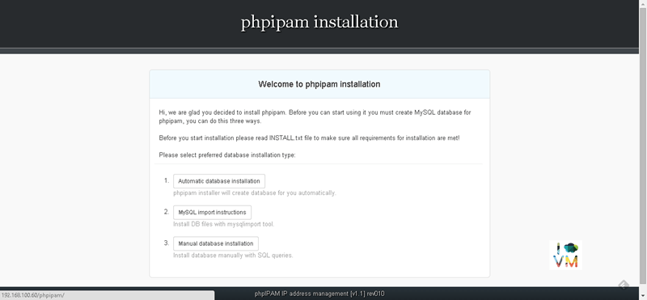
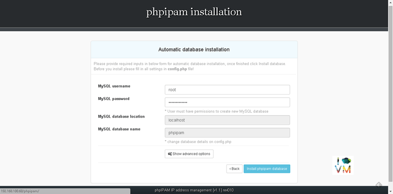
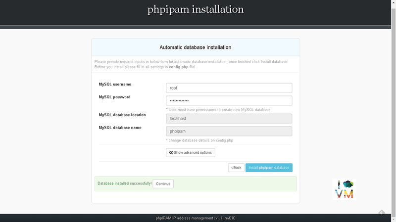
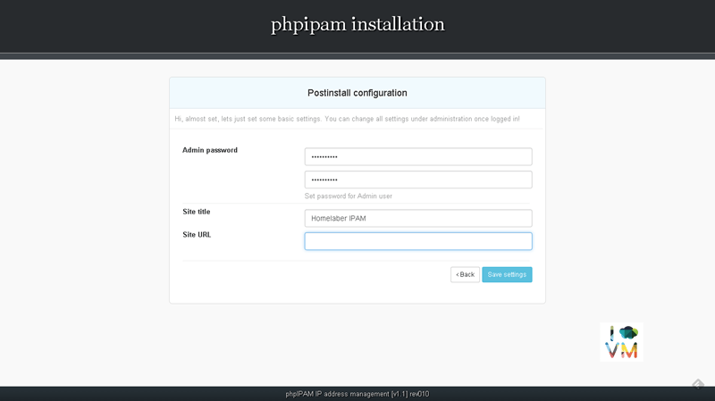
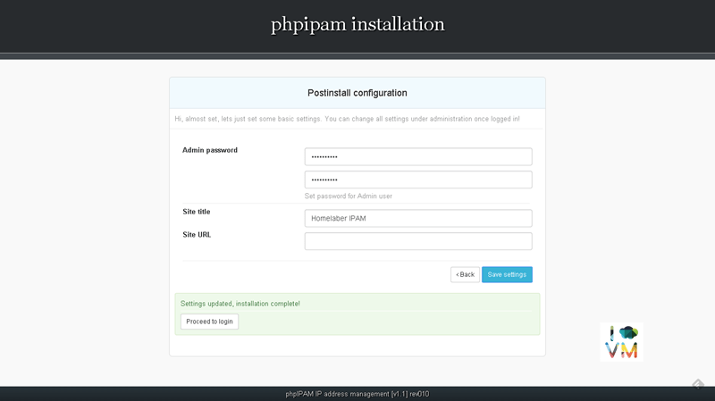
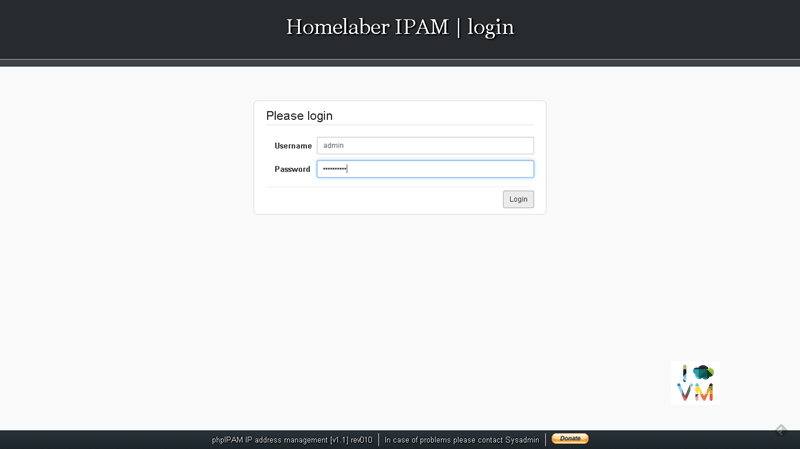
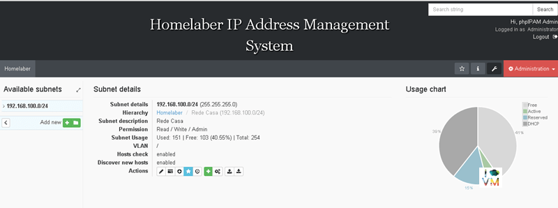

phpIPAM - Open Source IP Address Management
TutoriaisCompartilhe esse post nas redes sociais...
Olá Homelabers!
Neste post vou apresentar o phpIPAM, uma ferramenta Open Source, bastante útil para a administração de qualquer rede, seja a rede de seu pequeno Home lab com apenas 1 bloco /24 ou a rede de sua empresa com diversas redes, com milhares de IPs, VLANs, VRF, etc. Essa aplicação será bastante útil no seu ambiente de Home lab para evitar que você crie IPs duplicados ou fique na dúvida sobre qual IP está vago para associar a aquela nova VM que você está subindo.
Existem diversas ferramentas para gerenciamento de IP, tanto open source como comerciais. Eu testei diversas ferramentas open source e a que mais gostei (comparando as funcionalidades, estabilidade, facilidade de operação, usabilidade, etc) foi o phpIPAM, tanto é que utilizo essa ferramenta em produção na empresa onde trabalho. Aqui tem um link do Wikipedia que mostra algumas das principais ferramentas. Vale a pena dar uma olhada para conhecer.
O phpIPAM roda em cima da stack LAMP (Linux, Apache, MySQL e PHP) e neste post vamos realizar a instalação passo-a-passo desse software.
Requisitos:
Neste tutorial vamos utilizar o Ubuntu Server como base
- Apache2
- MySQL (5.1+)
- Php versão 5.3 ou posterior com seguintes módulos PHP ativados: mysqli, session, gmp, ldap, crypt, SimpleXML, json, gettext, pcntl e cli. Normalmente, a maioria dos módulos php necessários estão presentes na nstalação padrão. Se faltar algum módulo php, o instalador irá falhar e avisar. Você pode verificar quais módulos php são ativados através do comando php -m.
No meu caso, tive que instalar alguns módulos e executei os comandos abaixo:
apt-get install libgmp-dev
apt-get install php-pear
apt-get install php5-gmp
apt-get install php5-ldap
apt-get install php5-json
apt-get install php-gettext
service apache2 restart
Instalação:
Crie um diretorio para fazer o download do phpipam
mkdir dl
Mude para o diretorio de download
cd dl
Faça o download do arquivo
wget http://nbtelecom.dl.sourceforge.net/project/phpipam/phpipam-1.1.010.tar
Descompacte o arquivo
tar -xvf phpipam*.tar
Copie o diretório descompactado para o diretório do apache. No meu caso /var/www/html
cp -r -v phpipam/ /var/www/html/
Mude para o diretorio do phpipam
cd /var/www/html/phpipam/
Edite o arquivo** config.php** para configurar o diretorio do phpipam
nano config.php
Atualize a linha com o texto “define(‘BASE’, “/");” para “define(‘BASE’, “/phpipam/");”
Edite o arquivo .htaccess para configurar o diretorio do phpipam
nano .htaccess
Atualize a linha com o texto “RewriteBase /” para “RewriteBase /phpipam/”
Abra o browser e acesse http://ip-do-seu-servidor/phpipam/ e a tela de instalação irá aparecer. Clique na opção: 1 Automatic database instalation

Preencha os campos MySQL username e MySQL password com as informações de usuário e senha do seu servidor MySQL e clique no botão Install phpipam database

Clique no botão Continue

Preencha os campos Admin password com uma senha de sua preferencia. Clique no botão** Save settings**

Clique no botão Proceed to login para finalizar a instalação

Faça o login com o usuário “admin” e a senha que vocês escolheu


Pronto, agora basta configurar o phpIPAM com as suas redes e começar a gerenciar seus IPs de uma maneira mais organizada.
Se você tiver qualquer dúvida sobre como instalar ou utilizar o phpIPAM, deixe um comentário no post que terei o maior prazer de responder e tentar te ajudar!
Links úteis:
[su_box title=“Resumo:"]Este post apresenta o software phpIPAM, software open source que facilita o gerenciamento de endereço IPs em uma rede e mostra o passo a passo da instalação do software no Ubuntu 14.04. phpIPAM: http://phpipam.net/ [/su_box]
É isso Homelabers! Fico por aqui e espero que vocês tenham gostado. Até o próximo post e não se esqueça de deixar o seu comentário no post, seguir o HomeLaber no Twitter (@Homelaber) e curtir a nossa página no Facebook (fb.com/homelaber) para ficar sempre atualizado com as novidades do blog.
Compartilhe esse post nas redes sociais...Valdecir Carvalho
Nerd e pai orgulhoso da Mariana e João. Profissional Sênior de TI com foco em arquitetura de infraestrutura e cloud computing. Blogueiro, podcaster, palestrante, amante de comunidades técnicas, fotógrafo aposentado e adora jogos antigos.
#vExpert · #VMUGLeader · #VUGBrasil · #vBronwBagBrasil · #VeeamVanguard